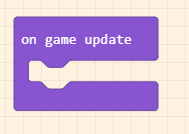

7. Bài 5: Biến trở
Giới thiệu
Biến trở, là một điện trở có thể thay đổi giá trị có đơn vị là Ohm (Ω). Biến trở được ứng dụng trong việc điều chỉnh cường độ dòng điện hoặc điện áp trong mạch.
Chúng ta có thể thấy biến trở ở rất nhiều thiết bị điện quanh ta như các nút vặn điều chỉnh của quạt, loa hay lò vi sóng, v.v.
Trên bộ kit Phys:Bit có sẵn một Biến trở xoay (Potentiometer) có giá trị 10kΩ.
Một biến trở thường có 3 chân. Trong đó, 2 chân cố định ở đầu của điện trở.
Chân còn lại có thể được di chuyển, thường được gọi là núm xoay hay cần gạt. Vị trí của chân này sẽ quyết định giá trị của biến trở.
Bằng cách di chuyển chân này chúng ta có thể điều chỉnh giá trị điện trở để kiểm soát dòng điện và điện áp và thay đổi cách mạch điện hoạt động.
{kind=link}
Xây dụng mạch điện
Thành phần:
Nguồn điện 3V.
Biển trở xoay R1.
Đèn LED.
- Sơ đồ mạch điện
- 
Khi dòng điện chạy qua qua biến trở trong mạch điện. Tổng điện trở của mạch sẽ thay đổi khi vặn núm xoay (thay đổi giá trị biến trở). Khi giá trị của biến trở tăng, tổng điện trở của mạch điện sẽ tăng làm độ sáng đèn giảm, khi giá trị của biến trở giảm, tổng điện trở của mạch điện giảm, độ sáng đèn tăng.
{kind=link}
Kết nối mạch điện
Núm xoay đấy dùng để điều chỉnh giá trị của biến trở
{kind=link}
Có thể bạn chưa biết?
Có nhiều loại biến trở khác nhau và ứng với mỗi cách kết nối sơ đồ mạch điện, ý nghĩa của biến trở trong mạch điện sẽ khác nhau nên tùy vào mục đích sử dụng, người thiết kế mạch điện sẽ lựa chọn loại biến trở thích hợp để sử dụng. Biến trở có trên bộ Phys:Bit là biến trở xoay, thường được sử dụng cho mục đích chiết áp (điều chỉnh điện áp). Dưới đây là một số biến trở thông dụng:
Biến trở con chạy:

Biến trở dây quấn:
{kind=link}